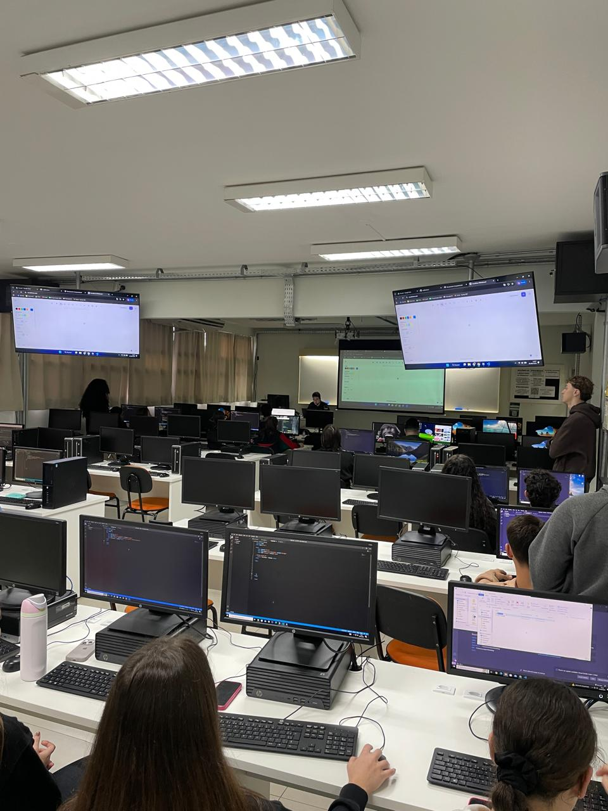

Relatório – 14ª Aula
Data: 25/08/2026
Turma: A
Instrutor:Victor
Criação de Currículo
Nessa aula do dia 25 de agosto, o encontro foi dedicado a uma aula prática intensiva, visando a aplicação direta dos conhecimentos de design e organização de layouts. Com o objetivo de permitir que a turma transformasse a teoria em código, os alunos foram desafiados a montar um currículo do zero, utilizando esse projeto como uma oportunidade para aprimorar o domínio do CSS — responsável pelo estilo e "maquiagem" das páginas — e do Flexbox. Através dessa atividade, foi possível exercitar o posicionamento de elementos e a arquitetura de um site na prática, consolidando técnicas avançadas de alinhamento p ara criar um documento profissional bem estruturado e visualmente atraente.
